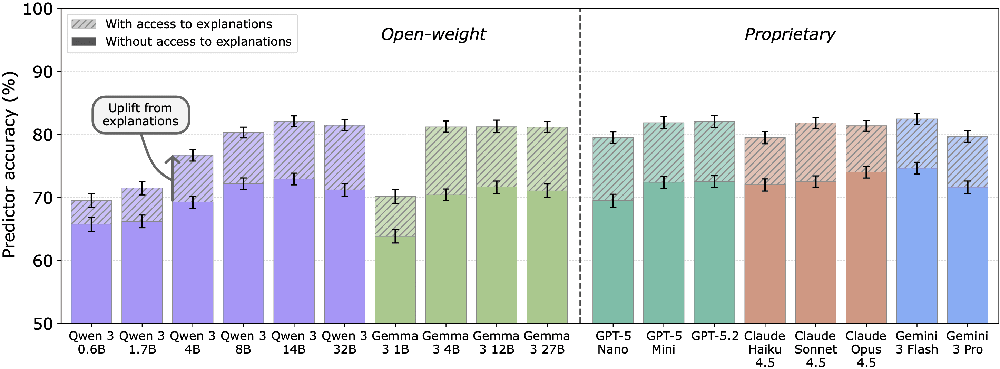
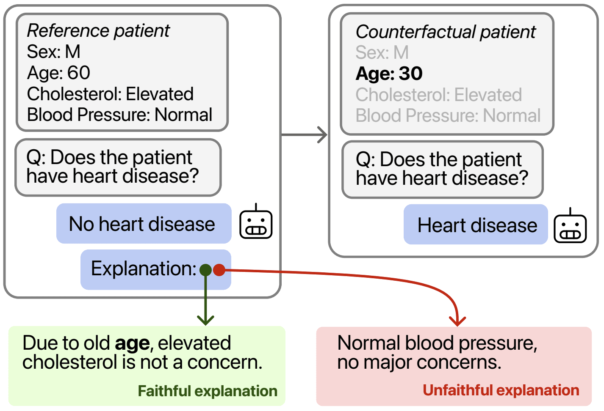
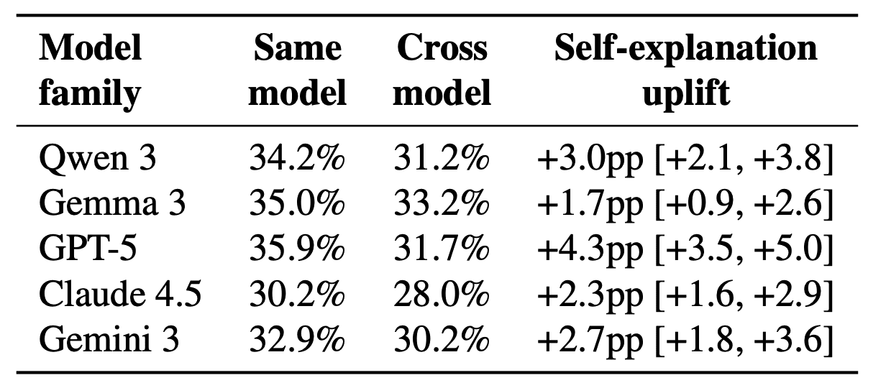

A Positive Case for Faithfulness
Existing faithfulness metrics are not suitable for evaluating frontier LLMs. We introduce a new metric based on whether a model's self-explanations help people predict its behaviour on related inputs. We find self-explanations encode valuable information about a model decision-making process (though they remain imperfect).
This is a summary of our new paper.

Explanatory faithfulness
Explanatory faithfulness asks whether an LLM's self-explanations (CoT or post-hoc) accurately describe the model's true reasoning process. This is important because:
- CoT faithfulness is an important (though not sufficient) condition for AI safety methods that rely on oversight of externalised reasoning.
- In high-stakes domains, e.g. healthcare, the reasoning process is often useful for verifying the validity of the final output.
We study explanatory faithfulness rather than causal faithfulness, i.e. does the explanation describe the reasoning process, regardless of whether the explanation was causally important for reaching the final output.1 See here for formal definitions.
What's wrong with existing explanation faithfulness metrics?
People have cared about measuring explanatory faithfulness for a long time. The most well-known metric is Turpin et al.'s biasing cues method.
Here, if a model switches its decision when a biasing cue is added to the context, e.g. "A Stanford Professor thinks the answer is X", and the model doesn't report the use of the cue in its explanation, then we say it's unfaithful.
This method detected many instances of unfaithfulness and was the basis for follow-on studies.
Unfortunately, it no longer works. Frontier models don't fall for these cues in the same way older models once did. Claude Opus 4 started showing signs of reliably ignoring the cues, and Anthropic retired the metric for Claude Sonnet 4.5. We call this the vanishing signal problem.
"Unfortunately, we do not currently have viable dedicated evaluations for reasoning faithfulness." (Claude Sonnet 4.5 System Card).
Normalized Simulatability Gain.
Our metric doesn't rely on adversarial cues or hints, allowing it to scale to frontier models. Our method is based on the following principle: a faithful explanation should allow an observer to learn a model's decision-making criteria, and thus better predict its behaviour on related inputs.
For example, if an LLM is used in a hiring process and explains a decision by mentioning it does not consider gender or race, then an observer would predict it would give the same decision on a related input where the gender or race was switched.
For example, consider an LLM is used in a medical setting, sees some patient data, and predicts the patient does not have heart disease. They might explain this by saying that they made the decision based on the old age of the patient. An observer might reasonably infer from this that if age were lower, the model would switch its decision.
We can then determine whether the explanation was faithful by evaluating how the model behaves on this counterfactual.

We formalise this in the following way.
- Reference model: The LLM being evaluated.
- Predictor model: The LLMs tasked with predicting the reference model's behaviour on the counterfactual inputs.
- 7000 question, counterfactual pairs: These come from popular datasets covering health, business, and ethics. Our method for identifying relevant counterfactuals from existing datasets is described in the paper.2
Given this, we ask: Do predictor models do better with the reference models' answer+explanation than with their answer only? i.e. do the explanations provide additional information to the predictors?
We define Normalised Simulatability Gain as
$$\text{NSG} := \frac{\text{Acc}_{\text{with exp}} - \text{Acc}_{\text{without exp}}}{1 - \text{Acc}_{\text{without exp}}}.$$
In other words, there's a gap between prediction without explanations and perfect prediction; how much of this gap do explanations allow us to close?
A positive case for faithfulness.
We consider 18 reference models, evaluating each with 5 predictor models (gpt-oss-20b, Qwen-3-32B, gemma-3-27b-it, GPT-5 mini, and gemini-3-flash).
We find that self-explanations substantially improve prediction of model behaviour. All evaluated models show significant simulability gains from explanations, with explanations addressing up to 1/3 of predictor errors.
This result is consistent across all models evaluated. NSG is notably lower in small models (Qwen 3 0.6B and Gemma 3 1B), though larger models are not necessarily better than medium models.3
Do models have privileged self-knowledge?
Self-explanations improve predictor accuracy, but this alone doesn't confirm they encode the true decision-making criteria. An alternative hypothesis: any plausible explanation might help prediction, regardless of source, simply by providing additional context or anchoring the predictor's expectations.
We test this by asking: is there anything special about a model explaining itself? We swap each self-explanation with one generated by a different model that gave the same original answer, restricting to models outside the reference model's family. We then compare NSG in the self-explanation and cross-explanation settings.
We find self-explanations consistently encode more predictive information than cross-model explanations, even when the external explainer models are stronger. This holds across all model families.

This provides evidence for a privileged self-knowledge advantage, where models have access to information about their own decision-making that an external observer cannot derive from input-output behaviour alone.4
Remaining unfaithfulness.
The positive NSG results are average-case. Self-explanations help prediction overall, but they're not always faithful. Sometimes the explanations mislead the predictors.
For example, in the figure below, GPT-5.2 makes a moral decision, giving the explanation that it doesn't take active measures that cause harm. However, when the genders are swapped, the model switches it's strategy to making an active measure causing harm. Gender is never mentioned in the explanations.

In the paper, we formalise this with a property called egregious unfaithfulness: the case where a self-explanation leads all five predictors to make a prediction that isn't aligned with the model's true behaviour.
Directions we're excited about
- Applying this to alignment-related datasets.
Our current evaluation uses health, business, and ethics datasets. These are tangentially related to AI safety. Designing datasets to test this on alignment questions is important. - Applying this to domain-specific datasets.
On the other hand, trust in model explanations is a bottleneck for deployment in high-stakes domains. Applying this to many medical datasets or many law datasets would give a better understanding of domain-specific risks. - Simulatability as a training objective.
A natural next step is to use counterfactual simulatability as an explicit training incentive. Work released today makes progress in this direction: Hase and Potts (2026). This is exciting.
To learn more, read our paper.
Citation
Mayne, H.*, Kang, J.*, Gould, D., Ramchandran, K., Mahdi, A., & Siegel, N. (2025). A Positive Case for Faithfulness: LLM Self-Explanations Help Predict Model Behavior. arXiv preprint arXiv:2602.02639.
@article{mayne2025faithfulness,
title={A Positive Case for Faithfulness: LLM Self-Explanations Help Predict Model Behavior},
author={Mayne, Harry and Kang, Justin Singh and Gould, Dewi and Ramchandran, Kannan and Mahdi, Adam and Siegel, Noah Y.},
journal={arXiv preprint arXiv:2602.02639},
year={2025}
}